An introduction into the Lightkurve Corrector Class - Noise removal for TESS light curves
Welcome everyone to our TESS Lightkurve splinter session!

Download the notebook
If you would like to download a copy of this notebook you can do so by clicking the link below
Learning Goals
In this tutorial, we will teach the user how to remove scattered light and noise from a TESS light curve.
The splinter session assumes a basic knowledge of python and astronomy, and will walk the user through several of the concepts outlined below,
- How to use Lightkurve to access the various data products and create time series.
- How to account for instrumental and noise effects within your data using the Corrector class.
This tutorial is designed for users that have previous experience with Lightkurve.
Imports
This tutorial requires the use of specific packages: - Lightkurve to work with TESS data (v2.0.1) - Matplotlib for plotting. - Numpy for manipulating the data.
First time users
If you are not that experienced with Python, or cannot download Lightkurve, you can run this notebook as a Colab notebook. Colaboratory allows users to write and execute Python in your browser with zero configuration required.
All you need is a Google account and to copy and paste in the following command at the top of your colab notebook:
!pip install lightkurve
This downloads the Lightkurve package.
import lightkurve as lk import numpy as np import matplotlib.pyplot as plt %matplotlib inline
Introduction to the Corrector Class
TESS light curves can often have systematic trends caused by noise sources such as scattered light and instrumental effects. Only the LightCurve objects which have been fully processed, have had these effects removed. Data derived from either TargetPixelFiles or Full Frame Images must undergo further processing by the user to remove these sources of noise.
To aid the user in this process, there exist several different tools within the Lightkurve package. These are known as the Corrector class. We briefly describe each of these corrector classes below,
- CBVCorrector:
Cotrending Basis Vectors (CBVs) are generated from the most common
systematic trends observed in each Sector. Each TESS CCD and Camera
has its own set of CBVs. There are three basic types of CBVs,
- Single-Scale: Contains all systematic trends combined in a single set of basis vectors. Generally speaking, a single-scale CBV performs better at preserving longer period signals.
- Multi-Scale: Contains systematic trends in specific wavelet-based band passes. There are usually three sets of multi-scale basis vectors in three bands. This type of correction performs better when the periods are close to the transiting planet durations, and help to preserve the signal.
- Spike: Contains only short impulsive spike systematics. This correction is applied to remove short impulsive systematic signals.
- RegressionCorrector: Here the light curve is de-trended against vectors that we think are predictive of the systematic noise. For FFI data, we have to select/define an aperture for our object of interest. Pixels outside of this aperture are used to create vectors that are predictive of the noise. These vectors are then removed from the data.
- PLDCorrector: Pixel Level De-correlation (PLD) works by identifying a set of trends in the pixels surrounding the target star, and performing linear regression to create a combination of these trends that effectively models the systematic noise introduced by spacecraft motion/scattered light. This noise model is then subtracted from the uncorrected light curve. It is similar to the RegressionCorrector.
In this tutorial, we will apply each of these methods to our data and compare the results. First, we need to obtain the data to test our various Corrector functions.
1. How to use Lightkurve to access the various data products and create a time series
Lightkurve offers a user-friendly way to analyze time series data obtained by telescopes, in particular TESS. You can search for the various data products for TESS on MAST using the following Lightkurve functions.
- To look for your object in a full frame image: `search_tesscut() <https://docs.lightkurve.org/reference/api/lightkurve.search_tesscut.html?highlight=search_tesscut>`__
- To look for target pixel files: `search_targetpixelfile() <https://docs.lightkurve.org/reference/api/lightkurve.search_targetpixelfile.html?highlight=search_targetpixelfile>`__
- To obtain light curve files for your object of interest: `search_lightcurve() <https://docs.lightkurve.org/reference/api/lightkurve.search_lightcurve.html?highlight=search_lightcurve>`__
For the purpose of this tutorial, we will be examining KT Eri, a bright nova in the constellation Eridanus that underwent an eruption in 2009.
To test our various methods of noise removal, we will be looking at FFI data for this object. We can search MAST for TESS FFI data on this object using the search_tesscut() function.
search_lc = lk.search_tesscut("KT Eri") search_lcSearchResult containing 2 data products.
| # | mission | year | author | exptime | target_name | distance |
|---|---|---|---|---|---|---|
| s | arcsec | |||||
| 0 | TESS Sector 05 | 2018 | TESScut | 1426 | KT Eri | 0.0 |
| 1 | TESS Sector 32 | 2020 | TESScut | 475 | KT Eri | 0.0 |
We see that there are two sets of data, one from Sector 5 and the other from Sector 32. Let’s look at the data from Sector 32. To download the data we must specify a cut out size in pixels and use the download() function.
S32 = search_lc[1].download(cutout_size=50) S32.plot()
<matplotlib.axes._subplots.AxesSubplot at 0x7f8da8e321d0>
Note that this cut out is much larger than a typical FFI, this is because when calculating our noise and systematics, we want a larger sample of pixels from which the correction will be applied.
Creating our light curve
Great! Now we have our data, we can create our light curve using the to_lightcurve() function. Our object is in the center, but it is kind of faint in comparison to some other objects. We must therefore create our own aperture as shown below.
aper_new = np.zeros(S32.shape[1:], dtype=bool) aper_new[24:27, 24:27] = True S32.plot(aperture_mask=aper_new, mask_color='red')
<matplotlib.axes._subplots.AxesSubplot at 0x7f8dd96dcfd0>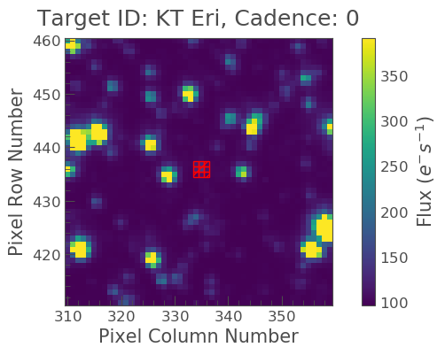
Excellent it covers our object! Let’s now make our light curve using this aperture and plot the result.
lc_S32 = S32.to_lightcurve(aperture_mask='threshold') lc_S32.plot(label="S32 FFI lc")
<matplotlib.axes._subplots.AxesSubplot at 0x7f8dd96dccd0>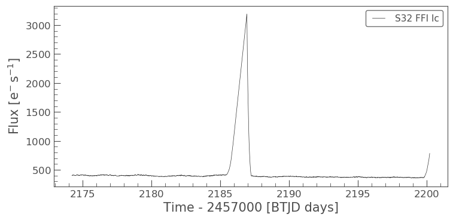
2. How to account for instrumental and noise effects within your data using the Corrector class
We can see from the above plot that our light curve is severely affected by scattered light, which needs to be removed. To remove this noise, let’s try our first method,
The CBVCorrector
Here we will use CBVs to remove our noise.
Check out our CBV tutorial for more information.
First, we must import the CBVCorrector from lightkurve.correctors, and then we can refer to our generate light curve.
from lightkurve.correctors import CBVCorrector cbvCorrector = CBVCorrector(lc_S32, interpolate_cbvs=True) cbvCorrector.cbvs
[TESS CBVs, Sector.Camera.CCD : 32.2.4, CBVType : SingleScale, nCBVS : 16, TESS CBVs, Sector.Camera.CCD : 32.2.4, CBVType.Band: MultiScale.1, nCBVs : 8, TESS CBVs, Sector.Camera.CCD : 32.2.4, CBVType.Band: MultiScale.2, nCBVs : 8, TESS CBVs, Sector.Camera.CCD : 32.2.4, CBVType.Band: MultiScale.3, nCBVs : 5, TESS CBVs, Sector.Camera.CCD : 32.2.4, CBVType : Spike, nCBVS : 7]
There are 5 sets of CBVs, all associated with Sector 32, Camera 2, CCD 4. The number of CBVs per type is also given. Let’s plot the Single-Scale CBVs, which contain all systematics combined.
cbvCorrector.cbvs[0].plot()
<matplotlib.axes._subplots.AxesSubplot at 0x7f8dd99f8810>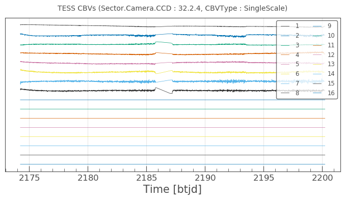
The first several CBVs contain most of the systematics. The latter CBVs pose a greater risk of injecting more noise than helping. The default behavior in CBVCorrector is to use the first 8 CBVs.
Next, we need to decide what kind of CBV we want to apply. Since we want to try not to overfit, we are going to use the Multi-Scale and Spike options (see above for more details). We can specify the type via an array as indicated below.
cbv_type = ['MultiScale.1', 'MultiScale.2', 'MultiScale.3','Spike']
Since we only want to use the information from the first 8 CBV’s when we use the SingleScale function, and all the Spike CBCs, we must also specify this via an array.
cbv_indices = [np.arange(1,9), np.arange(1,9), np.arange(1,9), 'ALL']
Now we want to check that the application of these vectors will not under or over-fit our data. There is a handy way of checking this via the use of a goodness_metric_scan_plot. A “Goodness Metric” value of 0.8 and above tends to indicate a good fit to the data.
cbvCorrector.goodness_metric_scan_plot(cbv_type=cbv_type, cbv_indices=cbv_indices); plt.plot([1.5e-1, 1.5e-1], [0,1])
[<matplotlib.lines.Line2D at 0x7f8d8a297290>]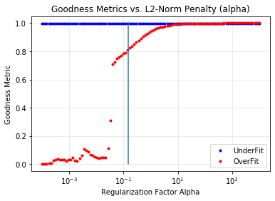
The above plot indicates that a regularization factor alpha value of 1.5e-1 is appropriate for our data. We can now specify this and check it via a diagnose method.
cbvcorrector = CBVCorrector(lc_S32, interpolate_cbvs=True) cbvcorrector.correct_gaussian_prior(cbv_type=cbv_type, cbv_indices=cbv_indices, alpha=1.5e-1) pltAxis = cbvcorrector.diagnose() pltAxis[0].set_ylim(300, 500); pltAxis[1].set_ylim(300, 500);

cbvcorrector_lc = cbvcorrector.corrected_lc cbvcorrector_lc.remove_outliers().plot()
<matplotlib.axes._subplots.AxesSubplot at 0x7f8debd37ad0>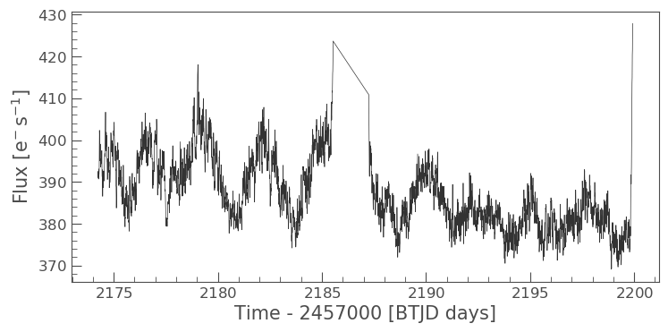
We can see that a correction was applied which has removed some of the slope from our data and also labeled the big spike as an outlier.
The above method can be adjusted more, but for now, let’s move onto our next method.
The RegressionCorrector
Remember that this method relies on looking at pixels outside of our previously defined object aperture to determine our systematics. We can apply regression correction as follows.
#Import the packages you need from lightkurve.correctors import RegressionCorrector, DesignMatrix
Next, we are going to define a design matrix which will contain all the systematics detected in the pixels outside of our aperture.
# Make a design matrix and pass it to a linear regression corrector dm = DesignMatrix(S32.flux[:, ~aper_new], name='regressors')#.pca(5).append_constant()
We only want the most dominant vectors and so specify the number of principle componant (PCA) as follows,
dm = dm.pca(10) plt.plot(S32.time.value, dm.values + np.arange(10)*0.2, '.');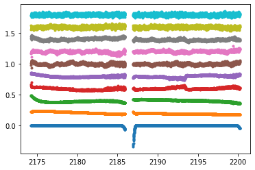
From this we can see that 10 is excessive and we should probably use only 5. Let’s do this and plot it up.
dm = DesignMatrix(S32.flux[:, ~aper_new], name='regressors').pca(5) dm.plot()
<matplotlib.axes._subplots.AxesSubplot at 0x7f8db9fa0750>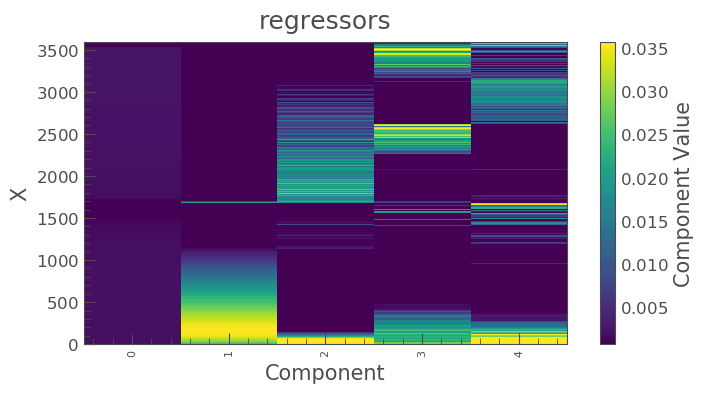
Lightkurve’s RegressionCorrector uses linear algebra to find the combination of vectors that makes the input light curve closest to zero. We therefore needed to add one more component - an “offset” term, to be able to fit the mean level of the light curve. We can do this as shown above by appending a“constant” to the design matrix.
dm = DesignMatrix(S32.flux[:, ~aper_new], name='regressors').pca(5).append_constant()
Next we pass this design matrix to the RegressionCorrector which de-trends the light curves against the vectors.
rc = RegressionCorrector(lc_S32) rc.correct(dm) pltAxis = rc.diagnose() pltAxis[0].set_ylim(300, 500); pltAxis[1].set_ylim(300, 500); corrected_ffi_lc = rc.correct(dm)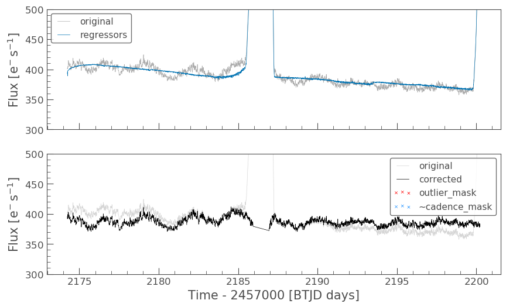
HOWEVER! The RegressionCorrector assumes that you want to remove the trend and set the light curve to the mean level.
This isn’t true for TESS scattered light, as the TESS FFI light curves have an additive background. As such, we want to reduce the flux to the lowest recorded level.
To do this, we can look at the model of the background that RegressionCorrector built and apply that. This model should never go below zero, to ensure that this is the case we only subtract the model flux value at the 5th percentile.
We can then apply all these factors to the FFI light curve using the following code,
# Optional: Remove the scattered light, allowing for the large offset from scattered light corrected_ffi_lc = lc_S32 - rc.model_lc + np.percentile(rc.model_lc.flux, 5) corrected_ffi_lc.plot(label='Corrected light curve');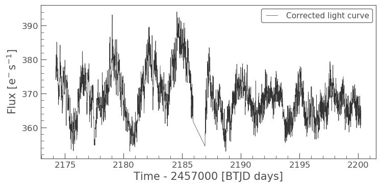
This has removed all the scattered light and the slope, but again could be adjusted further. However, we will move onto our final tool.
The PLDCorrector
PLD is built on top of RegressionCorrector and again works by identifying a set of trends in the pixels surrounding the target star, and performing linear regression to create a combination of these trends that effectively models the noise. This noise model is then subtracted from the uncorrected light curve. The difference between PLDCorrector and RegressionCorrector is that RegressionCorrector asks the user to define the pixels, where as PLDCorrector does not.
We will create a PLDCorrector object, and use the default values for PLDCorrector.correct to remove this scattered light background.
from lightkurve.correctors import PLDCorrector pld_S32 = PLDCorrector(S32) pld_S32.correct(pca_components=5) pltAxis = pld_S32.diagnose() pltAxis[0].set_ylim(300, 500); pltAxis[1].set_ylim(300, 500); pltAxis[2].set_ylim(300, 500); corrected_pldlc = pld_S32.correct(pca_components=5)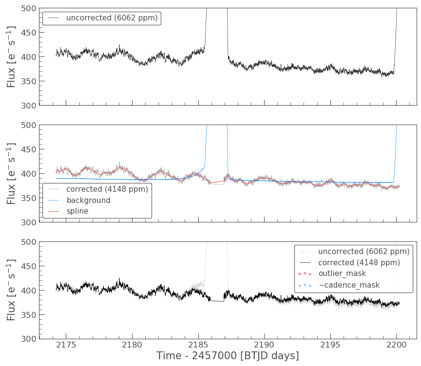
We can also examine the apertures used to perform this correction. For TESS, the dominant source of noise is the scattered light background, so by default only those pixels will be used. In the third panel, we can see that the background_aperture_mask contains only background pixels, reducing the risk of contamination by neighboring stars.
pld_S32.diagnose_masks();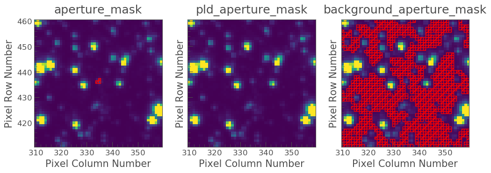
Now lets specifically look at our corrected light curve.
corrected_pldlc.plot()
<matplotlib.axes._subplots.AxesSubplot at 0x7f8d9df0c690>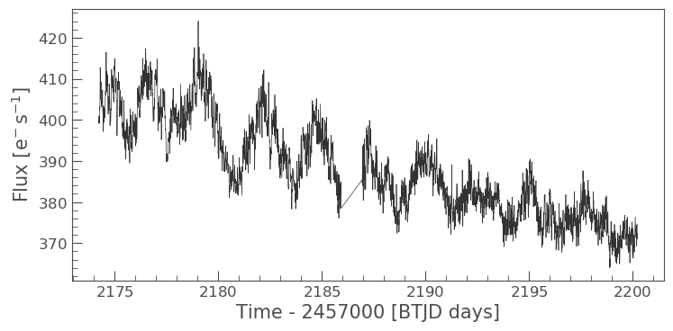
The large spike from the scattered light has sucessfully been identified and removed, but there is a slope in our data still. We can determine from the diagnostic plots that this is due to the application of a flat background, unlike that which was applied in RegressionCorrection.
Note that there are various componants that can be altered in PLD most of which can be found here.
Comparison
Let’s now plot up all of our corrected light curves in addition to the light curve originally derived from the FFI’s, and compare our results.
# Lets plot and compare the different methods ax = lc_S32.normalize().remove_outliers().scatter(color='black', label='Uncorrected Light Curve'); # Plot the CBV-corrected light curve in green cbvcorrector_lc.normalize().remove_outliers().scatter(ax=ax, color='green', label='CBV-corrected Light Curve') # Plot the regressor-corrected light curve in blue corrected_ffi_lc.normalize().remove_outliers().scatter(ax=ax, color='blue', label='Regressor-corrected Light Curve') # Plot the PLD-corrected light curve in red corrected_pldlc.normalize().remove_outliers().scatter(ax=ax, color='red', label='PLD-corrected Light Curve')
<matplotlib.axes._subplots.AxesSubplot at 0x7f8d8bb519d0>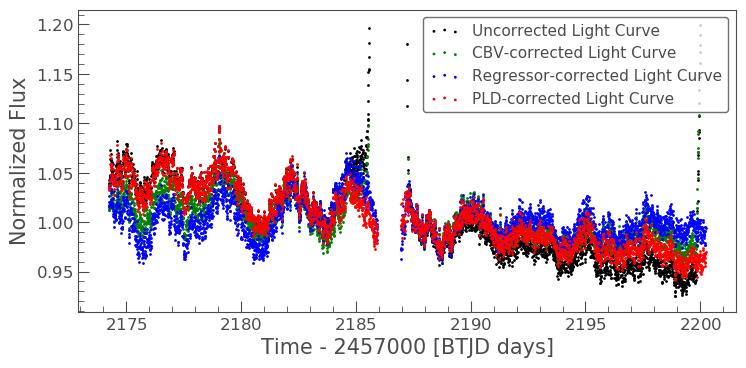
Summary
The plot above indicaates that there is no one solution. The result from the RegressionCorrector seems to have removed the most scattered light and the slope in the data, whilst retaining the periodicity.
As you may have discovered, removing the noise from the data can be a complex issue with multiple paths. You should always examine your method of noise removal and inspect all final products.
The tutorials listed below will aid you in better understanding the fine details of each process.